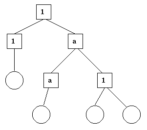

本OTP设计原则是针对如何根据进程、模块和目录组织Erlang代码的一系列原则。

上图中,方框提供监督,圆圈是工作者。
在监督树中，很多进程有着相似结构，遵循类似的模式。例如，督程的结构都很相 似。他们之间的唯一区别在于所监督的子进程。此外，很多佣程都是处于服务器－客户端关系中的服务器，有限状态机或者诸如错误日志这样的事件处理器。
行为是对这些常见模式的形式化。其思想是将一个进程的代码划分为一个通用的部分(行为模块)和一个特定的部分（回调模块）。
行为模块是Erlang/OTP的一部分。要实现一个督程，用户只需要实现回调模块，导出预定义集合中的函数—— 回调函数 。
一个例子可以用来说明代码是如何被划分成为通用和特定部分的：考虑下面的代码（普通Erlang编写），一个简单的服务器，用于保持跟踪一些“频道”。其他进程可以通过调用 alloc/0 和 free/1 函数来相应地分配和释放一个频道。
-module(ch1).
-export([start/0]).
-export([alloc/0, free/1]).
-export([init/0]).
start() ->
spawn(ch1, init, []).
alloc() ->
ch1 ! {self(), alloc},
receive
{ch1, Res} ->
Res
end.
free(Ch) ->
ch1 ! {free, Ch},
ok.
init() ->
register(ch1, self()),
Chs = channels(),
loop(Chs).
loop(Chs) ->
receive
{From, alloc} ->
{Ch, Chs2} = alloc(Chs),
From ! {ch1, Ch},
loop(Chs2);
{free, Ch} ->
Chs2 = free(Ch, Chs),
loop(Chs2)
end.
服务器的代码可以重写为一个通用的部分 server.erl:
-module(server).
-export([start/1]).
-export([call/2, cast/2]).
-export([init/1]).
start(Mod) ->
spawn(server, init, [Mod]).
call(Name, Req) ->
Name ! {call, self(), Req},
receive
{Name, Res} ->
Res
end.
cast(Name, Req) ->
Name ! {cast, Req},
ok.
init(Mod) ->
register(Mod, self()),
State = Mod:init(),
loop(Mod, State).
loop(Mod, State) ->
receive
{call, From, Req} ->
{Res, State2} = Mod:handle_call(Req, State),
From ! {Mod, Res},
loop(Mod, State2);
{cast, Req} ->
State2 = Mod:handle_cast(Req, State),
loop(Mod, State2)
end.
还有一个回调模块 ch2.erl:
-module(ch2).
-export([start/0]).
-export([alloc/0, free/1]).
-export([init/0, handle_call/2, handle_cast/2]).
start() ->
server:start(ch2).
alloc() ->
server:call(ch2, alloc).
free(Ch) ->
server:cast(ch2, {free, Ch}).
init() ->
channels().
handle_call(alloc, Chs) ->
alloc(Chs). % => {Ch,Chs2}
handle_cast({free, Ch}, Chs) ->
free(Ch, Chs). % => Chs2
(在上面的 ch1.erl 和 ch2.erl 中， channels/0 、 alloc/1 、 free/2 的实现被特意省略了，因为和这个例子无关。为了完整起见，下面会给出这些函数的一种写法。注意这只是个例子，实际的实现必须能够处理一些特殊情况，如频道用光无法分配等)
channels() ->
{_Allocated = [], _Free = lists:seq(1,100)}.
alloc({Allocated, [H|T] = _Free}) ->
{H, {[H|Allocated], T}}.
free(Ch, {Alloc, Free} = Channels) ->
case lists:member(Ch, Alloc) of
true ->
{lists:delete(Ch, Alloc), [Ch|Free]};
false ->
Channels
end.
不用行为来写的代码可能会更快些，但是所提高的效率是要付出通用性上的代价。对系统中以一致的方式管理所有应用的能力是非常重要的。
使用行为也可以使得由其他程序员所写的代码更容易阅读和理解。专门的编程结构，可能会更高效，但是往往更加难于理解。
模块 server 对应的是极大简化了的Erlang/OTP中的 gen_server 行为。
标准 Erlang/OTP 行为有：
编译器看到模块属性 -behaviour(Behaviour). 后会提出缺少的回调函数的警告。例如：
-module(chs3).
-behaviour(gen_server).
...
3> c(chs3).
./chs3.erl:10: Warning: undefined call-back function handle_call/3
{ok,chs3}